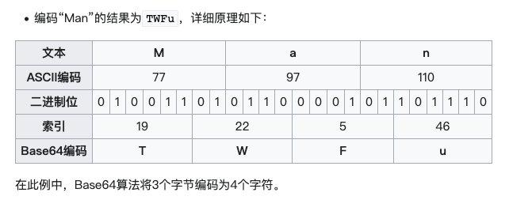
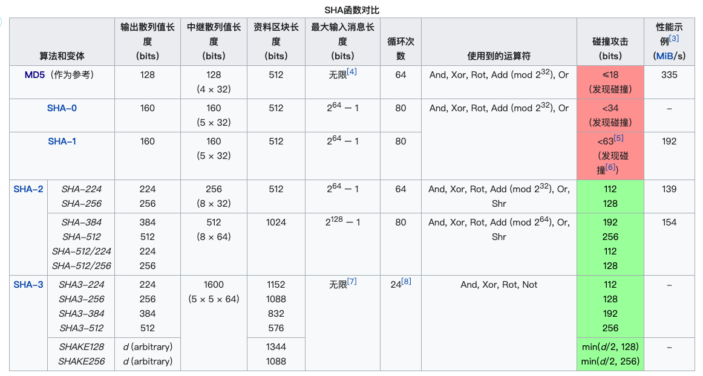
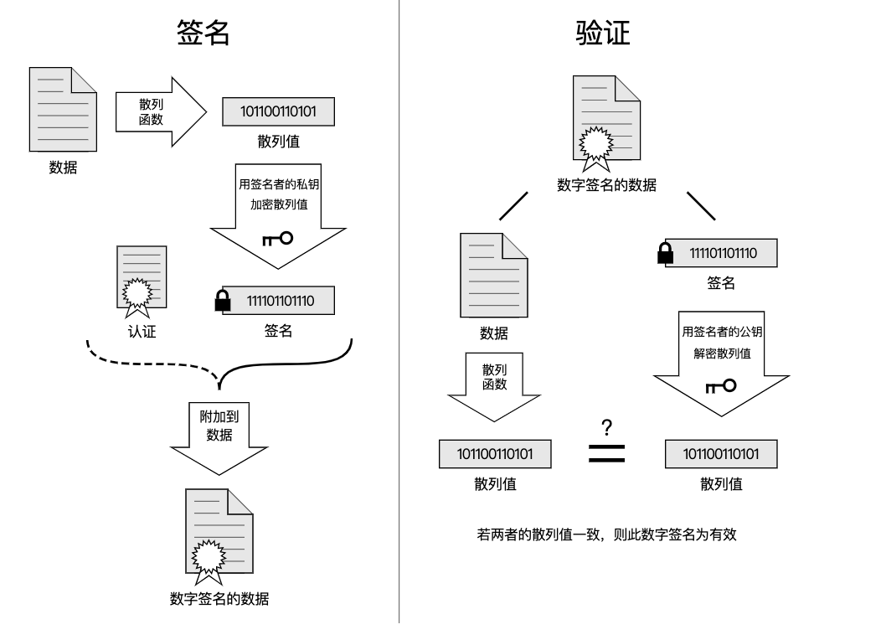

base64 补充
Base64就是一种基于64个字符来表示二进制数据的方法。没6个比特为一个单元，
具体可以查看base64的解释
64个字符包括 A-Z a-z 0-9 + /，再加上=用来补位，加上【等号】就是65个。
64个字符分别对应 0 - 63 这64个数字，64个数字对应着4个6位二进制数。

下方代码是在iOS中的一种编码、解码方式：
1 | //编码 |
- base64只适用于表示二进制文件。
- base64编码后，文件数量变多，不使用与大型数据。
- base64和数据一一对应，不安全。
Hash
Hash，一般翻译做“散列”，也有直接音译为“哈希”的，就是把任意长度的输入通过散列算法变换成固定长度的输出，该输出就是散列值。
这种转换是一种压缩映射，也就是，散列值的空间通常远小于输入的空间，不同的输入可能会散列成相同的输出，所以不可能从散列值来确定唯一的输入值。简单的说就是一种将任意长度的消息压缩到某一固定长度的消息摘要的函数。
hash不是加密算法。
Hash特点
- 算法公开
- 对相同数据运算，得到的结果是一样的
- 对不同数据运算，得到的结果是定长的，如MD5得到的结果默认是128位,32个字符（16进制标识）。
- 无法逆运算
- 信息摘要，信息“指纹”，是用来做数据识别的
常见的散列算法
常见的就是MD5，SHA等等。
MD5
MD5消息摘要算法（英语：MD5 Message-Digest Algorithm），一种被广泛使用的密码散列函数，可以产生出一个128位（16字节）的散列值（hash value），用于确保信息传输完整一致。
MD5由美国密码学家罗纳德·李维斯特（Ronald Linn Rivest）设计，于1992年公开，用以取代MD4算法。
1996年后被证实存在弱点，可以被加以破解，对于需要高度安全性的资料，专家一般建议改用其他算法。
2004年，证实MD5算法无法防止碰撞攻击，因此不适用于安全性认证，如SSL公开密钥认证或是数字签名等用途。
md5现常用于文件校验。
SHA
安全散列算法（英语：Secure Hash Algorithm，缩写为SHA）是一个密码散列函数家族，是FIPS所认证的安全散列算法。能计算出一个数字消息所对应到的，长度固定的字符串（又称消息摘要）的算法。且若输入的消息不同，它们对应到不同字符串的几率很高。
SHA家族的算法分别为：
- SHA-0：1993年发布，是SHA-1的前身。
- SHA-1：1995年发布，SHA-1在许多安全协议中广为使用，包括TLS、GnuPG、SSH、S/MIME和IPsec，是MD5的后继者。但SHA-1的安全性在2010年以后已经不被大多数的加密场景所接受。
- SHA-2：2001年发布，包括SHA-224、SHA-256、SHA-384、SHA-512、SHA-512/224、SHA-512/256。SHA-2目前没有出现明显的弱点。虽然至今尚未出现对SHA-2有效的攻击，但它的算法跟SHA-1基本上仍然相似。
- SHA-3：2015年正式发布，由于对MD5出现成功的破解，以及对SHA-0和SHA-1出现理论上破解的方法，NIST感觉需要一个与之前算法不同的，可替换的加密散列算法，也就是现在的SHA-3。
MD5 - SHA对比

Hash 用途
- 用户密码加密
- 搜索引擎
- 版权
- 数字签名
密码加密逻辑：
客户端在注册账号密码时，是必须加密的，但是怎么能保证密码的安全，那最好就是所有人都不知道，前后端都不知道密码，所以之前说的RSA加密就不行了，只要知道公钥或者私钥就可以破解了。
常用的加密方式有以下4种：
- 直接使用MD5
- MD5加盐
- HMAC加密
- 在HAC加密方案上添加时间戳等方案
直接使用MD5
将密码等重要的文本内容直接使用md5进行加密，但是md5现在也不安全，大部分md5加密之后都可以被破解。md5在线破解
md5现在常用于文件校验。
所以有了第二种方式：
MD5加盐
直接使用md5加密不算安全，那么就在文本上直接拼接一串字符串（盐、salt值），这样就可以防止被破解，但是如果添加的字符串泄露了，也通用会造成数据泄露的风险。
所以通常情况下，这个salt值都是由服务端生成的，每一个用户过来就对应的生成一个salt值，这种方式已经比第一种安全很多了。
那如果用户更换了设备，就需要先拿到salt值，然后再次输入密码，还是有可能被暴利破解。
所以有了第三种方式：
HMAC加密
HMAC被称为：密钥散列消息认证码。英语：Keyed-hash message authentication code），又称散列消息认证码（Hash-based message authentication code，缩写为HMAC）。
是一种通过特别计算方式之后产生的消息认证码（MAC），使用密码散列函数，同时结合一个加密密钥。它可以用来保证资料的完整性，同时可以用来作某个消息的身份验证。
通俗来讲，类似于我们现在的授权认证，比如当我们在新设备上登录微信，就需要老设备点击确认或者扫码操作，这种就是获取授权的一个操作。认证流程如下：
- 先由客户端向服务器发出一个验证请求。
- 服务器接到此请求后生成一个随机数并通过网络传输给客户端（此为挑战）。
- 客户端将收到的随机数提供给ePass，由ePass使用该随机数与存储在ePass中的密钥进行HMAC-MD5运算并得到一个结果作为认证证据传给服务器（此为响应）。
- 与此同时，服务器也使用该随机数与存储在服务器数据库中的该客户密钥进行HMAC-MD5运算，如果服务器的运算结果与客户端传回的响应结果相同，则认为客户端是一个合法用户。
这个过程是通过Hash运算得到一个值进行服务器端的验证。这种方式已经基于完美了，但还不够完美。
HMAC+时间戳
如果非法分子使用这种授权，模拟用户登录，那就会有问题了。通常会加上时间戳验证，这个授权认证需要在某一个时间范围内进行，超过了时间就会失败。从而大大增加安全性。
搜索引擎
我们经常使用百度搜索、谷歌搜索也会，有时候搜索出来的东西都是一样的。比如：
搜索：iOS NSString 和 NSString iOS是一样的。首先对这两个进行md5加密，得到一个结果：
1 | "iOS" = 1bdf605991920db11cbdf8508204c4eb |
这两个字符通过md5加密之后，相加得到的一个结果，所以不管顺序如何，得到的结果都是一样的。
版权问题
比如图片类型的网站，上传的第一份图片，就会生成一份原始的hash值。之后其他人下载之后使用，但是他们下载的不会是源文件，而是平台在内部做了处理重新生成的。
如果有人说我这个是正版的图片，你这个是盗版的，那就用原始文件进行对比处理。
数字签名
数字签名（又称公钥数字签名）是只有信息的发送者才能产生的别人无法伪造的一段数字串，这段数字串同时也是对信息的发送者发送信息真实性的一个有效证明。它是一种类似写在纸上的普通的物理签名，但是使用了公钥加密领域的技术来实现的，用于鉴别数字信息的方法。一套数字签名通常定义两种互补的运算，一个用于签名，另一个用于验证。
数字签名是非对称密钥加密技术与数字摘要技术的应用。
数字签名的实现
数字签名算法是依靠公钥加密技术来实现的。在公钥加密技术里，每一个使用者有一对密钥：一把公钥和一把私钥。公钥可以自由发布，但私钥则秘密保存；还有一个要求就是要让通过公钥推算出私钥的做法不可能实现。
普通的数字签名算法包括三种算法：
- 一种密码生成算法
- 标记算法
- 验证算法
通常情况下，使用Hash+RSA的方式实现数字签名。需要注意的是，私钥是保密的，公钥可以自由发布。

总结
- base64部分的补充
- RSA终端命令
- RSA特点
- RSA安全系数非常高（整个业务逻辑非常安全）
- 加密效率非常低（不能做大数据加密）
- 用来加密关键数据
- HASH特点
- 不可逆运算
- 相同的数据，结果相同
- 不同的数据，长度相同
- 一般用于做数据的识别（密码、版权）
- md5及SHA
- hash的应用：
- 密码加密（HMAC + 时间戳）
- 数字签名
- 算法：RSA+HASH
- 目的：验证数据的完整性，不被篡改
- 步奏：1.原始数据的hash值，2.使用rsa加密hash值，3.将原始数据+数字签名一起打包发送传递。